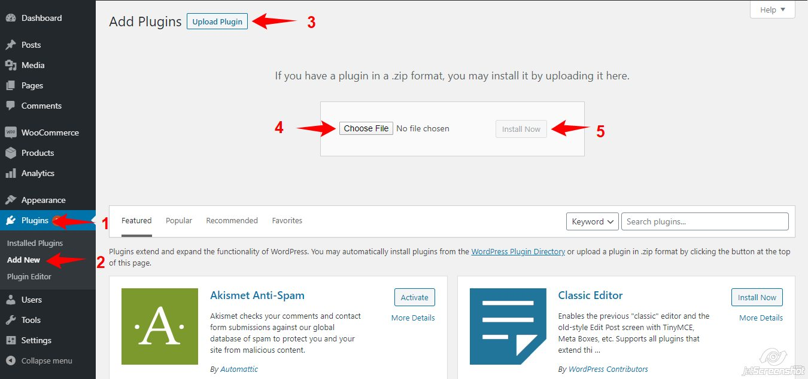
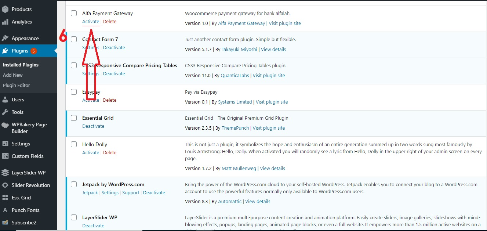
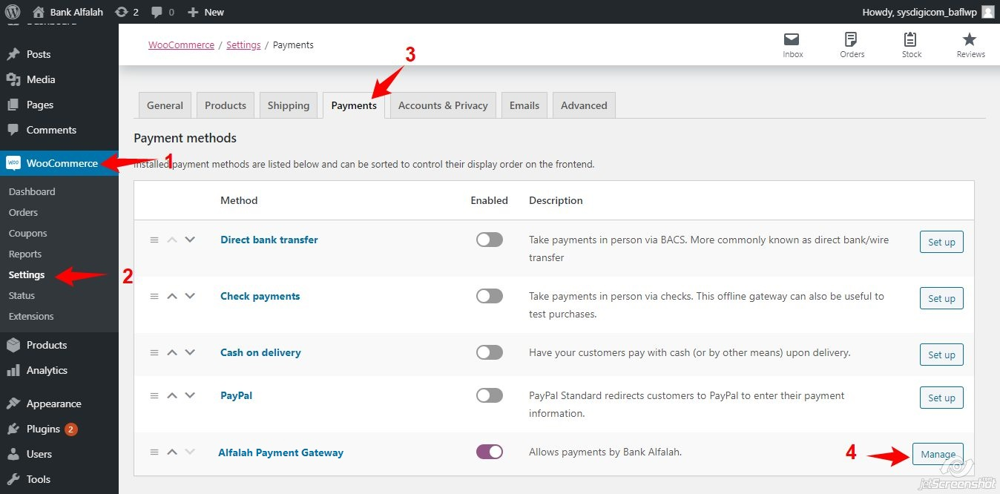
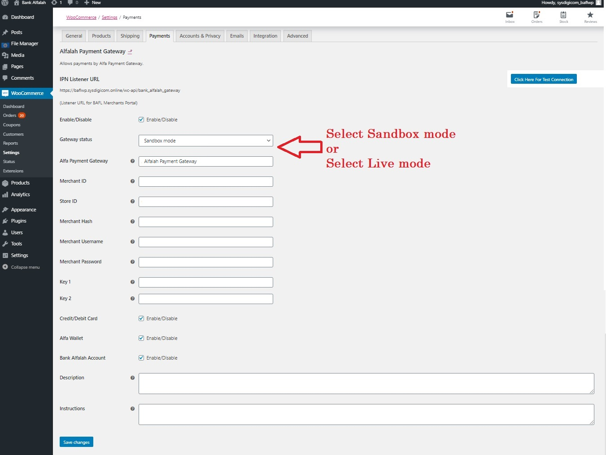
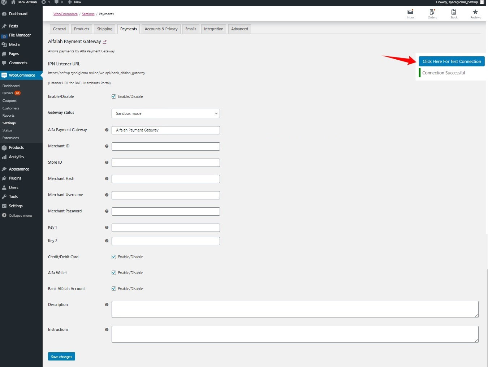
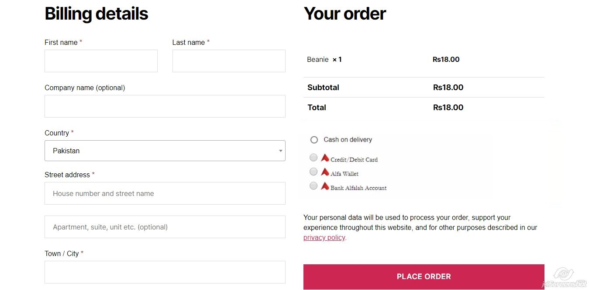

About Plugin
Alfa Payment integration plugin for WordPress Woocommerce gives you the ability to integrate with Alfa Payment Online Payment System. Alfa Online Payment System is an electronic payment solution that enables internet users to make financial transaction online. The plugin can be integrated easily and seamlessly into your website, web store or any of your online presence that is built using WordPress Woocommerce. The plugin contains the enablement of following facility that are provided by Alfa Payment Online Payment System:
1. Redirection Based Alfa Payment Integration
This Alfa Payment plugin for WordPress Woocommerce is built in PHP platform.
Installation
To install Alfa Payment Gateway WordPress Woocommerce Plugin, please follow the steps given below:
Login to Admin >> Plugins >> Add New
Here you should click on Upload Plugin
Now upload the bank-alfalah.zip file that provided to you.
Please see this image

After successful installation the plugin will appear under Plugins.
Now active your plugin here.

Configurations
For Merchants using WordPress Woocommerce plugin need to be set by admin. For this, please navigate to Woocommerce -> Settings -> Payments -> Alfa Payment Gateway ( by clicking Alfa Payment Gateway or Manage ).
Please see this image

After clicking Alfa Payment Gateway or Manage you will find bank alfalah configuration page.

Here you need to add following credentials shared by bank alfalah:
Merchant ID
Store ID
Merchant Hash
Merchant Username
Merchant Password
Key 1
Key 2
Now you can check connection between your website and bank alfalah.
Please see this image

After click on Test Connection on connection, you will find Connection Successful massege
Payment Types
There are 2 tabs for merchant mode settings. Sandbox Configuration and Production Configuration. You will need to enter the valid information in those fields. Sandbox fields should be required. There is a Test Connection button where you can check either merchant connection is valid or not.
Checkout Page
After saving admin stores configurations, review your payment section on customer-end checkout page:
Please see this image

Your bank alfalah Payment Method has successfully been integrated and ready to use.
Data Flow between WordPress Woocommerce & Alfa Payment
The data flow between WordPress Woocommerce plugin and Alfa Payment is completely secure and all the communication is over SSL. This WordPress Woocommerce plugin also built over SSL.
After selecting payment method from WordPress Woocommerce Checkout, Systems will ask customer to wait while redirecting to bank alfalah merchants’ portal where customer will be asked to enter payment details.
After successful/failed payment, customer will be redirected to success/fail page of your website.